Fiches 6e année
1206 fiches d'exercices 6e année en français : lecture, texte à trous et compréhension orale, à imprimer (PDF) avec corrigé.
1.206 ressources
Thème
Par thème: Géographie · Animaux et nature · Sciences et santé · Histoire et société · Arts et culture · Sport · Technologie · Culture générale · Fiches de lecture
Melbourne – Fiche de lecture : texte à trous, compréhension orale et mots mêlés
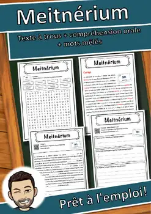
Meitnérium – Fiche de lecture : texte à trous, compréhension orale et mots mêlés
Megaloceros – Fiche de lecture : texte à trous et compréhension orale
Mayonnaise – Fiche de lecture : texte à trous, compréhension orale et mots mêlés
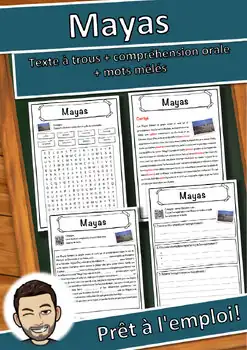
Mayas – Fiche de lecture : texte à trous, compréhension orale et mots mêlés
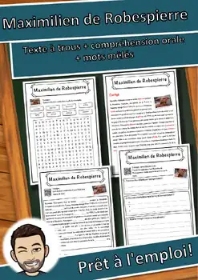
Maximilien de Robespierre – Fiche texte à trous et compréhension orale
Max Frisch – Fiche de lecture : texte à trous, compréhension orale et mots mêlés
Mauritanie – Fiche de lecture : texte à trous, compréhension orale et mots mêlés
Maurice – Fiche de lecture : texte à trous, compréhension orale et mots mêlés
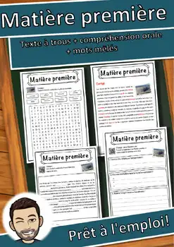
Matière première – Fiche de lecture : texte à trous et compréhension orale
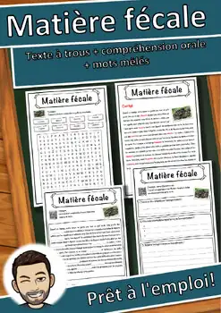
Matière fécale – Fiche de lecture : texte à trous et compréhension orale
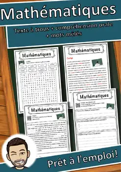
Mathématiques – Fiche de lecture : texte à trous et compréhension orale
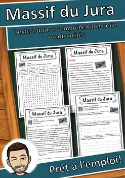
Massif du Jura – Fiche de lecture : texte à trous et compréhension orale
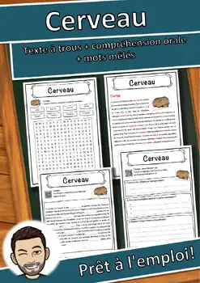
Cerveau – Fiche de lecture : texte à trous, compréhension orale et mots mêlés
Bologne – Fiche de lecture : texte à trous, compréhension orale et mots mêlés
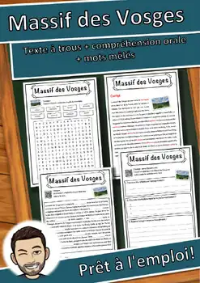
Massif des Vosges – Fiche de lecture : texte à trous et compréhension orale
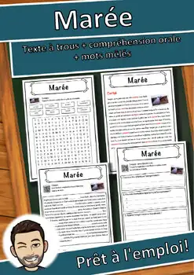
Marée – Fiche de lecture : texte à trous, compréhension orale et mots mêlés
Martyr – Fiche de lecture : texte à trous, compréhension orale et mots mêlés
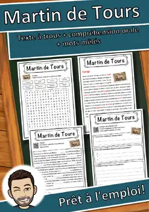
Martin de Tours – Fiche de lecture : texte à trous et compréhension orale
Martin Luther King – Fiche de lecture : texte à trous et compréhension orale

Martin Luther – Fiche de lecture : texte à trous et compréhension orale
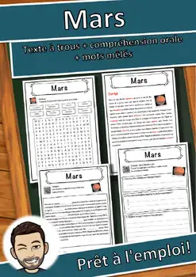
Mars – Fiche de lecture : texte à trous, compréhension orale et mots mêlés
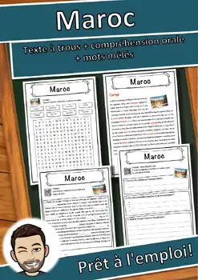
Maroc – Fiche de lecture : texte à trous, compréhension orale et mots mêlés
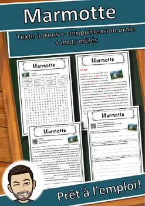
Marmotte – Fiche de lecture : texte à trous, compréhension orale et mots mêlés
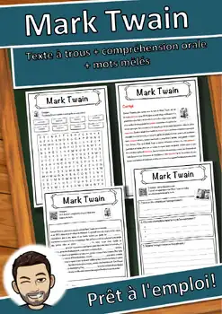
Mark Twain – Fiche de lecture : texte à trous, compréhension orale et mots mêlés
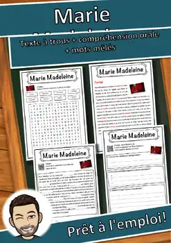
Marie Madeleine – Fiche de lecture : texte à trous et compréhension orale
Marie Curie – Fiche de lecture : texte à trous et compréhension orale
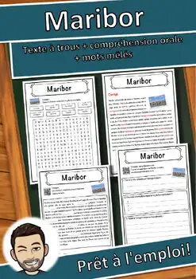
Maribor – Fiche de lecture : texte à trous, compréhension orale et mots mêlés
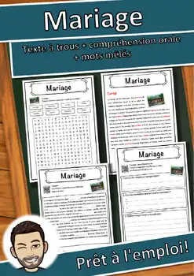
Mariage – Fiche de lecture : texte à trous, compréhension orale et mots mêlés
Maria Montessori – Fiche de lecture : texte à trous et compréhension orale
Mare – Fiche de lecture : texte à trous, compréhension orale et mots mêlés
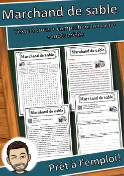
Marchand de sable – Fiche de lecture : texte à trous et compréhension orale
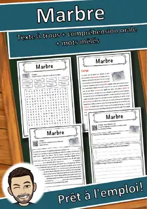
Marbre – Fiche de lecture : texte à trous, compréhension orale et mots mêlés
Marathon – Fiche de lecture : texte à trous, compréhension orale et mots mêlés
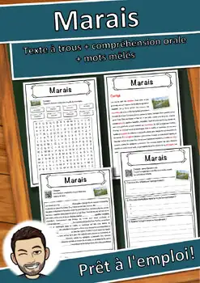
Marais – Fiche de lecture : texte à trous, compréhension orale et mots mêlés
Manuscrit de Voynich – Fiche de lecture : texte à trous et compréhension orale
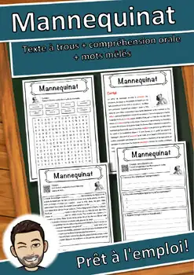
Mannequinat – Fiche de lecture : texte à trous et compréhension orale
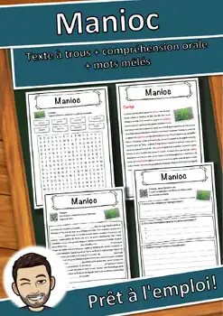
Manioc – Fiche de lecture : texte à trous, compréhension orale et mots mêlés
Manifestation – Fiche de lecture : texte à trous et compréhension orale
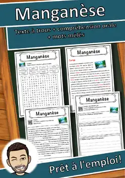
Manganèse – Fiche de lecture : texte à trous, compréhension orale et mots mêlés
Mandarin standard – Fiche de lecture : texte à trous et compréhension orale
Manchester United Football Club – Fiche texte à trous et compréhension orale
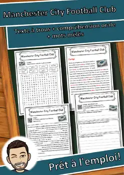
Manchester City Football Club – Fiche texte à trous et compréhension orale
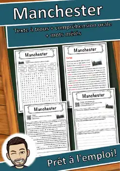
Manchester – Fiche de lecture : texte à trous, compréhension orale et mots mêlés
Manager – Fiche de lecture : texte à trous, compréhension orale et mots mêlés
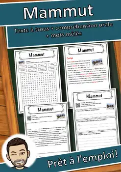
Mammut – Fiche de lecture : texte à trous, compréhension orale et mots mêlés
Malte – Fiche de lecture : texte à trous, compréhension orale et mots mêlés

Mali – Compréhension de lecture : texte à trous, écoute et mots mêlés
Aucune ressource trouvée – essaie un autre mot ou un autre filtre.